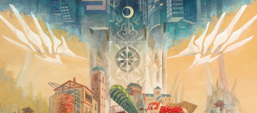

藝祭2012 ! 2012.9.10  新たに手書きの作品と、展示で使った作品を上げました。 上の画像にリンク貼っておきます。 作品を見にきてくださった方、ありがとうございます。 自分の作品は見る側に世界観を補ってもらうところがあるので、 作品を展示しないと意味がないのです。 忙しくてあまり会場にいられず、 名刺がきれてお持ちいただけなかった方がいたら申し訳ないです。m(_ _)m 少し休んだら、すぐにデザフェスや卒業制作に向けて動き始めるつもりです。
藝祭2012 ! 2012.9.10 新たに手書きの作品と、展示で使った作品を上げました。 上の画像にリンク貼っておきます。 作品を見にきてくださった方、ありがとうございます。 自分の作品は見る側に世界観を補ってもらうところがあるので、 作品を展示しないと意味がないのです。 忙しくてあまり会場にいられず、 名刺がきれてお持ちいただけなかった方がいたら申し訳ないです。m(_ _)m 少し休んだら、すぐにデザフェスや卒業制作に向けて動き始めるつもりです。